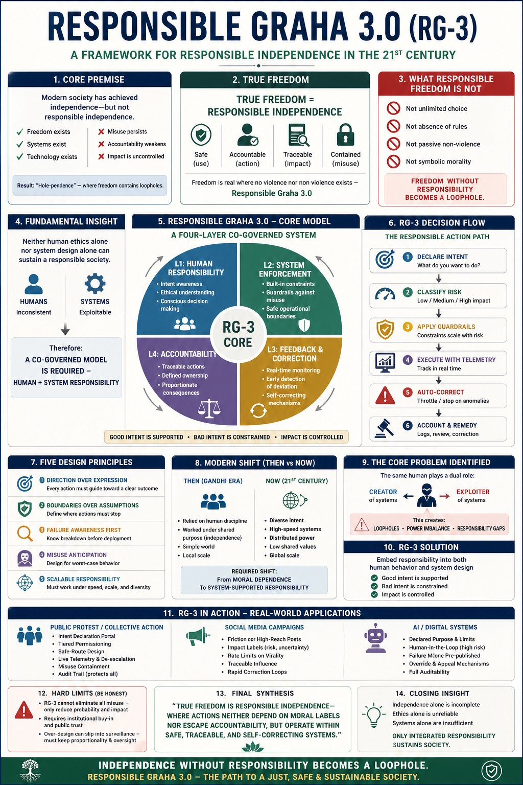

Moving from "Hole-pendence" to co-governed responsibility.
Beyond "Hole-pendence"
Modern society has achieved independence, yet freedom remains fragile because it lacks Responsible Independence. WE recognize that freedom without accountability is merely a loophole waiting to be exploited.
The Evolution of Responsibility
| Past Models (Moral-Only) | Today’s Model (RG-3) |
|---|---|
| Relied on individual human discipline. | System-supported responsibility. |
| Effective under shared purpose. | Effective under diverse intent and scale. |
| Ethics as an optional choice. | Ethics as a system-assisted default. |
The Four Layers of Co-Governance
To sustain a responsible society, WE embed responsibility into both human behavior and system design:
Layer 1 & 2: Intent & Constraint
- Human Responsibility: Intent awareness and conscious decision-making.
- System Enforcement: Built-in guardrails and safe operational boundaries.
Layer 3 & 4: Correction & Trace
- Feedback Loops: Real-time monitoring and self-correcting mechanisms.
- Accountability: Traceable actions and proportionate consequences.
Design Rules for True Freedom
A freedom that is safe to exercise must pass five non-negotiable filters:
- No Systemic Harm: Foreseeable risks must be mitigated.
- Clear Accountability: Ownership of every action path must be defined.
- Traceable Impact: Outcomes must be visible and recorded.
- Misuse Containment: Systems must isolated bad actors without collapsing the whole.
- Directional Outcome: Every action path must guide toward a clear, beneficial result.
“True freedom is responsible independence—where actions neither depend on moral labels nor escape accountability, but operate within safe, traceable, and self-correcting systems.”